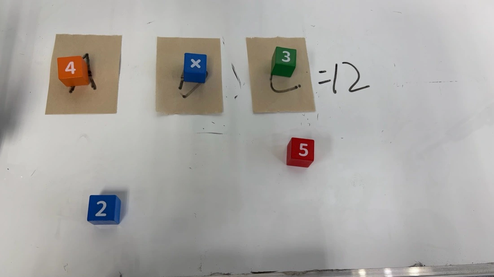

A language agent decides what goes where. One learned pick-and-place policy carries out the transfers.
Two tasks. One shared policy.
Physical experiments

Recorded execution frames
01 / 02
Make an equation that equals 12.
Select operands and an operator, then bind them to the three expression slots. Success requires both a valid equation and correct physical placement.
Object → destination
4 → A ·× → B ·3 → C
Example outcome: 4 × 3 = 12.
Execution frames from the paper. Both tasks use the same controller, trained on generic pick-and-place demonstrations.
ACE in action
Video
The idea
Compose the task. Reuse the motion.
Putting a cube down is a motor skill. Choosing the right cubes to form an equation also requires reasoning about their values, roles, and destinations.
ACE connects these decisions to physical execution through tracked pick-and-place masks. Persistent context keeps earlier object associations available when manipulation changes what the camera can see.
1
shared visuomotor policy
~1 hour
of generic demonstrations
20
physical trials per task
Method
From a semantic goal to an executable transfer.
The agent resolves task constraints and object roles. The mask interface turns each assignment into spatial targets for the learned controller.
01
Reason & bind
Choose the object, its destination, and the next sub-goal from the instruction and scene context.
02
Ground & track
Encode the pick and place regions in one mask, then update those regions as the scene changes.
03
Execute & assess
Run the shared policy. Use the execution report and new observation to advance or retry.
Task semantics change; the object–destination mask remains the shared execution interface.
A small, explicit interface.
Pick regions use pixel value 127, place regions use 255, and the background is 0. The policy receives the tracked mask and robot state; the agent retains object identity and task meaning.
Context survives a changed view.
A turned cube can hide the pattern that identified it. ACE retains earlier object and conversational context alongside the live workflow and tracking state to support outcome assessment.
See the full ACE architecture +The agent coordinates two robot-facing skills, MaskInterface and PickPlace, through execution feedback and persistent context.
Results
Task-level composition on a physical robot.
20 randomized physical trials per task. The ACE controller is trained on generic transfers, without complete demonstrations of either evaluation task.
70%
Semantic Formula Assembly
14 of 20 complete tasks
80%
Constraint Retrieval
16 of 20 complete tasks
Swipe left or right to see all results. ↔
Complete task success and partial progress
Method
Formula assembly Success rate
Constraint retrieval Success rate
Formula assembly FGS / 20
ACE full framework
70.0%
80.0%
18.0
ACE without persistent memory
55.0%
70.0%
16.8
ACT
0.0%
0.0%
3.2
π0.5
0.0%
0.0%
3.0
Standalone Diffusion Policy
0.0%
0.0%
3.4
ACT, π0.5, and standalone DP use full-task demonstrations in the reported training setup. Both ACE variants use the same primitive-trained DP; the memory ablation retains live workflow and tracking state.
Persistent context
Earlier observations help assess the current scene.
Keeping persistent context improves observed success by 15 percentage points in formula assembly and 10 points in retrieval, corresponding to three and two additional successful trials.
Removing memory leaves the same policy, active workflow, and tracker in place.
Visual-input ablation
A mask-only view for the controller.
Mask only90%18 / 20 grasps
Mask + RGB30%6 / 20 grasps
Both variants use the same test objects and matched training and execution settings. This is a single-cube grasping evaluation.
Evaluation scope and metric definitions +
Task-level zero-shot: the controller learns generic pick-and-place transfers. Task-specific object selection, destination assignment, and sequencing are composed at inference time.
Success rate (SR): the fraction of completed trials, including allowed retries. An agent-controlled trial ends after three determinations that the same active sub-goal remains incomplete.
Grounding accuracy (GA): correctly localized required targets divided by all required targets. Pick and place count separately; only the final result counts, so retries add no items. ACE achieves 100.0% GA on formula assembly and 97.5% on retrieval.
Fine-Grained Score (FGS): partial progress in semantic selection, grasping, placement, and final equation correctness, with a maximum of 20.
Scope: two cube-manipulation tasks and one learned primitive. Persistent object and conversational context are ablated jointly. Recovery observations are qualitative.
These results follow the updated manuscript linked above. The public arXiv v1 preprint contains the earlier evaluation.
Paper
Abstract
General-purpose manipulation requires both semantic reasoning over task constraints and reliable execution of contact-rich actions. We present ACE, an agentic manipulation harness that composes a high-level language agent with a reusable mask-conditioned visuomotor policy. Given an open-ended instruction, the agent solves semantic constraints, binds objects to destination roles, and decomposes the task into executable transfers represented by tracked pick-and-place masks. Execution feedback supports outcome assessment, re-grounding, and retry, while persistent object and task context preserves earlier associations when manipulation changes visible cues. We evaluate ACE on two physical multi-step tabletop tasks, Semantic Formula Assembly and Constraint Retrieval. The visuomotor policy is trained only on generic pick-and-place demonstrations and reused without complete demonstrations of either evaluation task, enabling task-level zero-shot composition. Across 20 randomized trials per task, ACE achieves 70% and 80% success, respectively, compared with 55% and 70% without persistent context. These results suggest that an agentic harness can extend a primitive-trained manipulation policy to semantically distinct tasks through explicit object-destination interfaces and closed-loop execution feedback.
Reference
Cite the work
Citation for the public arXiv preprint.
@article{lei2026ace,
title = {ACE: Agentic Control for Embodied Manipulation
via Zero-shot Workflow Reasoning},
author = {Lei, Iok Tong and Li, QianZhi and Yap, Ying Jie
and Zhang, Yujie and Zhong, Rui and Gui, Haichao
and Liu, Xiaolong and Deng, Zhidong},
journal = {arXiv preprint arXiv:2607.04162},
year = {2026},
url = {https://arxiv.org/abs/2607.04162}
}